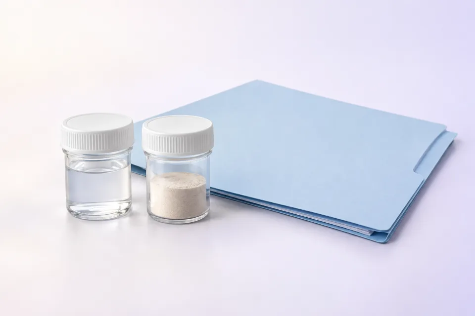
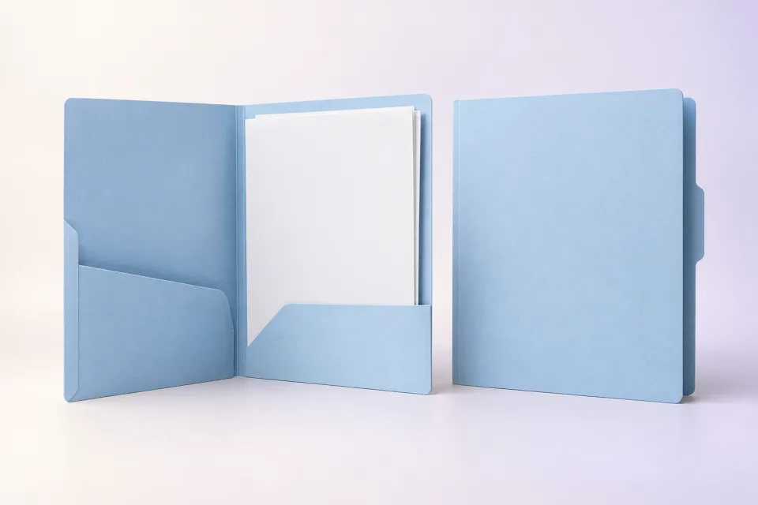
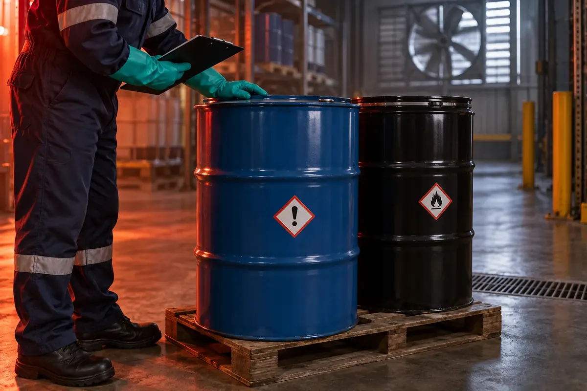

Hojas de residuos · FDSR
Construimos la FDSR del residuo con antecedentes trazables para respaldar su manejo y traslado.
Elaboramos, actualizamos y revisamos hojas de seguridad. Elige el documento que necesitas y cuéntanos tu caso antes de usarlo o de coordinar un retiro.
Se abrirá WhatsApp con este texto escrito: adjunta las fotografías si las tienes y envíalo. El valor y el plazo se confirman después de revisar el caso.
Selecciona tu caso para conocer los antecedentes que conviene reunir.
Para una sustancia o mezcla comercial. Partimos de su composición y uso previsto para elaborar o revisar el documento.
La FDSR se construye para el residuo que resulta de un proceso: revisamos su origen, composición y posibles contaminantes. La HDS del producto original puede apoyar la revisión, pero no reemplaza la hoja del residuo.
Cuéntanos qué material tienes y para qué te solicitan la hoja. Revisamos si necesitas elaboración, actualización, auditoría o evaluación documental.
¿Necesitas también el retiro? Busca un transportista en Transporte Autorizado. Si forma parte de una actividad de recolección, organiza una campaña.
Cuéntanos qué material tienes y para qué te solicitan la hoja. Por WhatsApp también puedes enviarnos fotos del envase, la etiqueta o el residuo.
Cuatro formas de ayudarte, según lo que ya tienes y el material que necesitas respaldar.

Construimos la FDSR del residuo con antecedentes trazables para respaldar su manejo y traslado.
Construimos una hoja de seguridad para una sustancia o mezcla.

Revisamos documentos extranjeros, antiguos o incompletos para uso en Chile.
Revisamos tu hoja sección por sección y ordenamos las correcciones.
Partimos del proceso generador, la composición conocida, contaminantes posibles y manejo previsto. La HDS del producto original puede ayudar, pero no describe por sí sola el residuo resultante.
Qué recibes: una FDSR definida por el alcance y los antecedentes disponibles, con brechas o caracterización adicional identificadas antes de emitir la versión final. La revisión interna deja claro qué información sustenta la clasificación.
Trabajamos con composición, antecedentes del proveedor y uso previsto. Organizamos la información técnica y sus medidas de seguridad en un documento revisado internamente.
Qué recibes: HDS/FDS estructurada, con versión y registro de los antecedentes utilizados para su elaboración.
Contrastamos idioma, referencias, datos disponibles y uso real del material. Cuando cambian la composición, el proveedor o el uso, indicamos si se debe reevaluar el documento.
Qué recibes: documento revisado, registro de cambios y una lista clara de información pendiente, si la hubiera.
Identificamos brechas, inconsistencias, referencias obsoletas y datos faltantes. Priorizamos lo que afecta la lectura, el uso seguro y la actualización del documento.
Qué recibes: informe de hallazgos con prioridades de corrección y una propuesta de los próximos pasos.

HDS y Transporte Autorizado se conectan cuando necesitas preparar la documentación y coordinar un retiro.
En los casos sujetos al Título V del D.S. 148, el traslado requiere la hoja de seguridad de transporte del residuo y el Documento de Declaración. La HDS del producto original no debe asumirse como sustituto. La aplicabilidad se revisa según el caso.
Cada etapa define qué necesitamos, qué revisamos y qué entregamos.
Indica si se trata de un producto, residuo o documento existente. Comparte su uso o el proceso que lo genera.
Revisamos composición disponible, HDS previa, etiquetas, fichas técnicas o análisis que ya tengas.
Contrastamos la información y elaboramos o corregimos el documento. Si faltan datos esenciales, te indicamos qué necesitas complementar.
La hoja pasa por revisión interna. Entregamos el resultado con fecha, versión y las observaciones que correspondan al alcance acordado.
El resultado se define por el servicio contratado y la calidad de los antecedentes.
Una HDS reúne información sobre peligros, manejo, almacenamiento y respuesta ante emergencias. Para residuos, revisamos el documento que corresponde al caso. Los antecedentes permiten sustentar el contenido y mantener sus versiones al día.
El marco cambia según si se trata de un producto, una mezcla o un residuo. Por eso revisamos el material y el uso antes de definir el documento.
Aplica a sustancias y mezclas peligrosas: regula clasificación, etiquetado y HDS/FDS. No define por sí solo la condición del residuo que queda después de un proceso.
Regula la gestión de residuos peligrosos y las exigencias aplicables a su traslado. La FDSR se revisa con los antecedentes propios del residuo y su proceso.
Regula campañas de recolección, recepción y almacenamiento de residuos de productos prioritarios. Puede ser relevante si el documento apoya una campaña; no reemplaza los marcos anteriores.
No se debe asumir que son equivalentes. El residuo puede tener una composición o contaminación distinta. Revisamos sus antecedentes y la hoja específica que corresponda al transporte.
Podemos comenzar por revisar la información disponible. Si faltan datos para sustentar la clasificación o las medidas de seguridad, identificamos qué antecedentes o análisis se necesitan antes de cerrar el documento.
La hoja comunica información de seguridad. Su elaboración no constituye un certificado oficial ni una autorización sanitaria. La entrega incluye la revisión interna acordada para el servicio.
Sí. Los antecedentes y porcentajes disponibles se incorporan a una herramienta de apoyo. El resultado se revisa internamente antes de entregar la hoja; la calidad del documento depende de la información de entrada y de esa revisión.
Podemos revisar su incorporación como complemento del servicio. El alcance y la información necesaria se acuerdan en la cotización.
Depende del servicio, la cantidad de documentos y la suficiencia de los antecedentes. El valor y el plazo se confirman después de revisar el caso.
Parte con información general. Las opciones específicas nos ayudan a entender el alcance sin pedir fórmulas completas en el primer contacto.